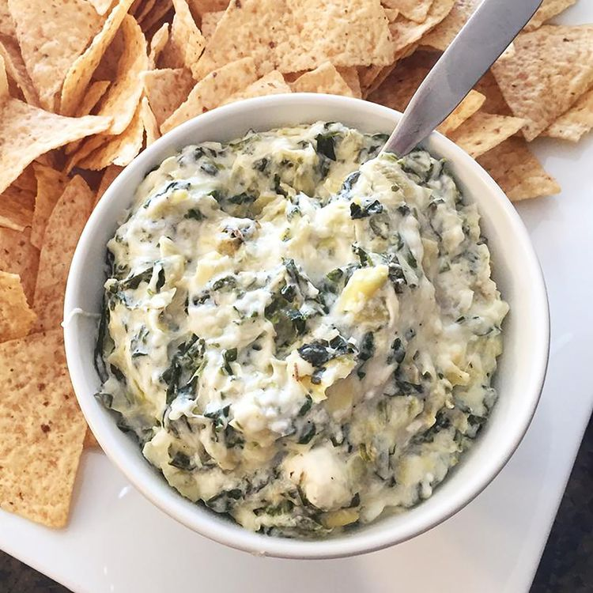

Hot Spinach Artichoke Dip

Description
This spinach artichoke dip is delicious. It's so cheesy
and fragrant. If you don't like artichokes, don't worry — you'll
never know they're in there! My only question is: Is it okay
to eat it with a spoon right out of the dish?
Ingridents
- Cream cheese: This satisfying spinach artichoke dip starts with a block of cream cheese.
- Mayonnaise: Mayonnaise lends creaminess and a welcome tangy flavor.
- Cheeses: You'll need grated Parmesan, grated Romano, and shredded mozzarella.
- Garlic: A clove of minced garlic takes the flavor up a notch.
- Spices and seasonings: The spinach artichoke dip is seasoned with dried basil, garlic salt, salt, and pepper.
- Artichoke hearts: Drain and chop one can of artichoke hearts.
- Spinach: Thawed and drained frozen spinach is perfect for this easy recipe.
Steps
- Preheat the oven to 350 degrees F (175 degrees C). Lightly grease a small baking dish.
- Mix cream cheese, mayonnaise, Parmesan cheese, Romano cheese, garlic, basil, garlic salt, salt, and pepper together in a medium bowl. Gently stir in artichoke hearts and spinach.
- Transfer the mixture to the prepared baking dish; top with mozzarella cheese. Bake in the preheated oven until bubbly and lightly browned, about 25 minutes.